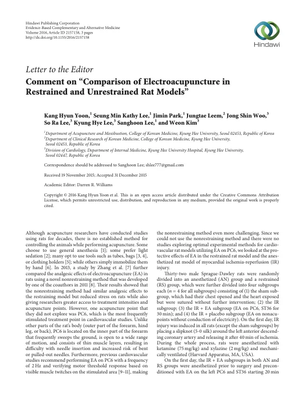

Comment on “Comparison of Electroacupuncture in Restrained and Unrestrained Rat Models”
Yoon KH, Lee SMK, Park J, Leem J, Woo JS, Lee SR, Lee KH, Lee S, Kim W
Evidence-Based Complementary and Alternative Medicine 2016(1):2157158

첫 장 · 오픈액세스First page · open access
논문 소개Summary
침 실험에 쓰는 랫드를 어떻게 붙잡아 둘 것인가는 오래된 문제입니다. 전신마취를 쓰기도 하고 가볍게 진정시키기도 하며 통이나 자루로 고정하기도 합니다. 이 편지글은 비고정 방식을 제안한 선행 연구에 대한 논평입니다. 그 연구가 다루지 않은 혈자리가 심혈관 연구에서 가장 많이 쓰는 내관인데, 내관은 앞다리 안쪽에 있어 움직임이 커서 자침이 어렵고 바늘이 휘거나 빠지기 쉽습니다. 저자들은 비고정 방식을 쓸 수 없어 심근허혈재관류 손상 모델에서 마취군과 고정군을 견주었습니다. 랫드 32마리를 두 군으로 나누고 각각 가짜수술과 허혈재관류, 전침, 위약의 네 하위군을 두었습니다. 연구자들이 실제로 부딪힌 조건을 그대로 적어 다음 연구에 넘긴 글입니다.
How to hold a rat still during acupuncture experiments is a long-standing problem: some use general anaesthesia, some light sedation, some restrain the animal with tubes or bags. This letter comments on a preceding study that proposed a non-restraining method. The point that study did not explore is PC6, the most frequently stimulated point in cardiovascular research — located on the inner forearm, which sweeps the ground and moves through a wide range, making insertion difficult and needles liable to bend or pull out. Unable to use the non-restraining method, the authors compared anaesthetised and restrained groups in a myocardial ischaemia-reperfusion injury model. Thirty-two Sprague-Dawley rats were divided into two groups, each with four subgroups: sham, ischaemia-reperfusion, ischaemia-reperfusion with electroacupuncture, and ischaemia-reperfusion with placebo. It is a note setting down the conditions the researchers actually met, and passing them to the next study.
인용Cite
Yoon KH, Lee SMK, Park J, Leem J, Woo JS, Lee SR, Lee KH, Lee S, Kim W. Comment on “Comparison of Electroacupuncture in Restrained and Unrestrained Rat Models”. Evidence-Based Complementary and Alternative Medicine. 2016;2016(1):2157158. doi:10.1155/2016/2157158